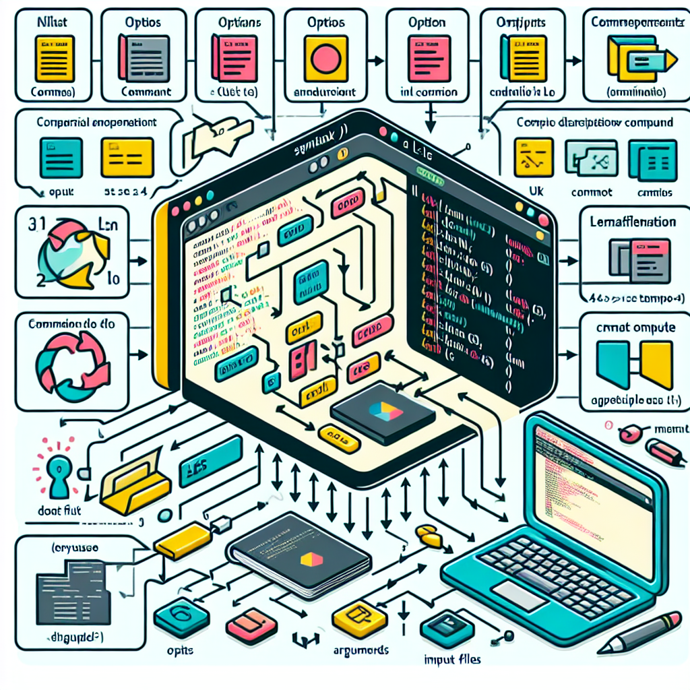

Introduction
Thank you for joining me today as we explore the fundamental Linux commands ls, file, and less. These commands are essential for navigating and managing files in a Linux environment. If you are new to Linux like me or looking to deepen your command line skills, this guide will provide you with the knowledge and confidence to interact with your system efficiently.
Todays Linux Commands
Linux commands form the backbone of navigating and managing files in a Linux environment. Among the most essential are ls, file, and less. Understanding these commands will empower you to efficiently interact with your system, making file management seamless and intuitive. This guide is designed for beginner Linux users who are eager to master these fundamental tools.
Understanding the ls Command
The ls command is used to list files and directories within the file system. It is one of the most frequently used commands in Linux, providing a quick view of directory contents.
Basic Usage of ls
The simplest form of the ls command is used without any options:
lsThis command will list all files and directories in the current directory.
terminal@terminal-temple ~ $ ls
Documents Downloads Music my_new_directory PicturesOptions and Flags for ls
Here is a table detailing some common options for the ls command:
| Option | Long Option | Option Description |
|---|---|---|
| -a | –all | Include hidden files (those starting with a dot) |
| -A | –almost-all | Include hidden files, except . and .. |
| -l | Use a long listing format | |
| -h | –human-readable | With -l, print sizes in human-readable format (e.g., 1K, 234M, 2G) |
| -t | Sort by modification time, newest first | |
| -r | –reverse | Reverse order while sorting |
| -F | –classify | Append indicator to entries |
| -d | –directory | List directories themselves, not their contents |
| -S | Sort by file size, largest first |
Examples of ls in Action
- To list all files, including hidden ones, in long format:
ls -la
terminal@terminal-temple ~ $ ls -la
total 7
drwxr-xr-x 7 terminal staff 224 Mar 19 2024 .
drwxr-xr-x 3 terminal staff 96 Mar 19 2024 ..
drwxr-xr-x 5 terminal staff 160 Mar 19 2024 Documents
drwxr-xr-x 3 terminal staff 96 Mar 19 2024 Downloads
drwxr-xr-x 2 terminal staff 64 Mar 19 2024 Music
drwxr-xr-x 3 terminal staff 96 Aug 23 07:16 AM my_new_directory
drwxr-xr-x 2 terminal staff 64 Mar 19 2024 Pictures- To sort files by modification time:
ls -lt
terminal@terminal-temple ~ $ ls -lt
total 5
drwxr-xr-x 5 terminal staff 160 Mar 19 2024 Documents
drwxr-xr-x 3 terminal staff 96 Mar 19 2024 Downloads
drwxr-xr-x 2 terminal staff 64 Mar 19 2024 Music
drwxr-xr-x 3 terminal staff 96 Aug 23 07:16 AM my_new_directory
drwxr-xr-x 2 terminal staff 64 Mar 19 2024 PicturesAdvanced ls Usage
Advanced users can customize the output further by combining options, such as viewing detailed information about files in reverse order of modification time:
ls -ltr
terminal@terminal-temple ~ $ ls -ltr
total 5
drwxr-xr-x 5 terminal staff 160 Mar 19 2024 Documents
drwxr-xr-x 3 terminal staff 96 Mar 19 2024 Downloads
drwxr-xr-x 2 terminal staff 64 Mar 19 2024 Music
drwxr-xr-x 3 terminal staff 96 Aug 23 07:16 AM my_new_directory
drwxr-xr-x 2 terminal staff 64 Mar 19 2024 PicturesExploring the file Command
The file command is used to determine the type of a file. Unlike file extensions, file examines the actual content of the file to provide accurate information.
Basic Usage of file
The file command can be used as follows:
file filenameThis command will output the type of filename.
Options and Flags for file
Here is a table detailing some common options for the file command:
| Option | Long Option | Option Description |
|---|---|---|
| -b | –brief | Do not prepend filenames to output lines |
| -i | –mime | Output MIME type strings |
| -z | –uncompress | Try to look inside compressed files |
| -L | –dereference | Follow symbolic links |
Understanding File Types
The file command can distinguish between various file types, such as text files, executables, or image files. This is particularly useful when handling files with no extensions.
Practical Examples of file
To check the type of a file:
file myfile.txtTo view MIME type:
file -i myfile.txt
Practical Use Cases
Real-world Scenarios for ls, file, and less
- Listing and Sorting Files: Finding recently modified files quickly using
ls. - Checking File Types: Confirming file types before opening or executing them with
file. - Viewing Log Files: Using
lessto navigate large log files efficiently.
Scripting with These Commands
Automate tasks by incorporating these commands into bash scripts, enhancing productivity and consistency in file management.
Troubleshooting Common Issues
Common Errors and Solutions
ls: command not found: Ensure the command is typed correctly or check the system’s PATH environment.- Unknown file type with
file: The file might be corrupted or empty. - Difficulties navigating with
less: Familiarize yourself with the navigation shortcuts provided.
Tips for Beginners
- Practice using these commands regularly to build confidence.
- Experiment with different options to understand their effects.
Conclusion
Mastering Linux commands like ls, file, and less is crucial for efficient system navigation and file management. By understanding their options and practical applications, you will enhance your ability to work effectively in a Linux environment. Remember, practice is key—explore these commands and incorporate them into your daily workflow.
FAQs
- What is the difference between
lsanddir?- While
lsis standard in Unix/Linux systems,diris more common in Windows. Both list directory contents but may have different options and outputs.
- While
- How can I list hidden files with
ls?- Use the
-aoption:ls -a.
- Use the
- What does the
filecommand output mean?- It describes the file type, such as “ASCII text” or “ELF 64-bit LSB executable.”
- How do I search within a file using
less?- Press
/followed by the search term, then pressEnter.
- Press
- Can I use
lessto edit files?- No,
lessis a viewer. Use editors likenanoorvimfor editing.
- No,
Your Turn!
We hope you found this guide helpful! Please share your feedback and spread the word by sharing this article on social media.
References
This comprehensive guide should provide you with a solid understanding of these key Linux commands, enhancing your command line proficiency.
Happy Coding! 🚀
